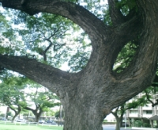
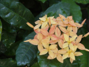
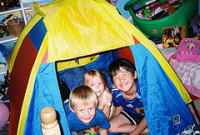

 ナコスでは、英語を学び、皆さんの生活の中に英語を織り込んでいっていただくために、まず、みなさん、お一人お一人に、ふさわしいテーマを選びます。
そして、このテーマに沿って、次の３つのことを柱に言葉の勉強を展開していきます。
■ 切り出しスタイル
■ かかわりスタイル
■ 過ごし方スタイル
切り出しスタイル 「セルフポートレイト」
"Hello" と言われて "Hello" と答え、
"How are you?" と聞かれて " Fine, thank you" と返事をする。
何も間違えてはいない。しかし、何か物足りませんね。
今まで学校で勉強したこと、そんなことの発表会の気分。
こんなやり取りだったら、私でなくても、誰でもいい・・・。
そうして、次に言うことは、「英語の勉強に来ています。でも、まだ、英語はまったく駄目なんです」と、なぜかそんな一言も付け加えたくなります。そのあと、握手をしたりして、その場をうまくこなせたと少しは満足できたとしても、新しい出会いが始まったとはとても思えない。そんな風景が思い当たりませんか？
「もう一度、あなたのお名前、お聞かせください」・・・
そんなくどさを大切にしてください。
初対面の人と挨拶を交す際、卒なくその場をこなしたい、時として、そんな思いにかられませんか？ 相手の人が、言葉や文化を異にする場合には、なおさらのことかもしれません。
しかし、卒なくこなす、こんなことにとらわれると、挨拶の中で行われる会話の内容よりも、形式的な挨拶の流れの方が気になります。そうして、皆さんは、紋切り型の英語の挨拶を繰り返すばかり・・・
相手の会話をじっくり聞くゆとりなく、相手の名前すら聞き逃すこともあります。二度三度と名前を聞き返したい気持ちはあるのだけれど、なぜかそれができない。スムーズな会話の流れをさえぎりたくないのかもしれません。さらには、英語という言葉にこだわり出すと、解っている英語はすっ飛ばして、解らない英語ばかりが気に掛かります。
皆さんがそんなおさまりの悪さと格闘していらっしゃる時、相手の人もどう接してよいものか戸惑っているのかもしれませんね。「私の名前にすら興味はないのだろうか」なんて‥‥。 結局、相手の人に、皆さんは、「英語を勉強している日本人」、というくらいにしか映らない、といったことにもなりかねません。
「英語を勉強している日本人」、という以上の存在を、相手の人に伝え切れた時、
「アメリカの人と知り合えた」と満足できる第一歩を踏み出せるのではないでしょうか。
こんな風景を思い浮かべながら、まず、心の準備をされてはいかがでしょうか。
皆さんが、得意になって語りたくなるようなメッセージを、日本語で考えてみてください。ナコスがそんなメッセージをネイティヴの英語に翻訳いたします。そしてそれを読み込み、自分らしく語れるまで練習をします。
また、アメリカの人との出会いの中で、手渡したり、ちらちらと見ながら、読んでみたり、暗唱したり、あるいは、そこから得意のエピソードを拾って来て会話を楽しんだり‥‥
「英語を勉強している日本人」ということ以上に、皆さんの英語のレベルに合わせて、深くアメリカの人達と知り合っていかれる過程で、楽しんでいただけたらと思います。
そして、さわやかで無理のない「切り出しスタイル」なんてものを、皆さんと、アメリカの人、そしてナコス、三者のふれあいの中で見つけていただきたいと思っています。
（質問） セルフポートレイトって自己紹介のことですか？
言葉によるご自分のスケッチです。しかし、自己紹介という理解でも結構です。ただ、皆さんが、ご自分に納得できる自己紹介です。
アメリカ人と接触する際、ご自分を正確に打ち出し、相手の理解を得ることは、やはり大切なことだと思います。また、皆さんが出会いを感じ、好感するアメリカの人に、いろいろな自分、〈今までの自分、今日の自分、明日の自分〉、そんな自分の数々を、誤解なく共感を持って解ってもらいたい、あるいは、「解ってもらえたんだ！」なんて、そんな情景を創り出してみたい。こんな思いを持つのも自然なことだと思います。
セルフポートレイトは、そんな時のため、皆さんご自身の「解き明かし」をしていただくための準備です。
こんなものを、アメリカの人をまじえて、ナコスと共に、皆さんの一番大切な言葉、日本語でまず考えてみようというわけです。ですから、公開はちょっと、などと思うことは、もちろん飛ばしてください。しかし、そんな話したくないことを聞かれる場面に出くわした時、自分をどう理解させ印象づけていくかは大切なことかもしれませんね。いろいろ方法はありますよ。
（質問）自分のことを日本語でまとめたとして、それを、英語に訳してもらっても、とても理解できるとは思えないのですが。
訳された文章の中に、難しいと思われるものが多々含まれているかもしれませんね。そんな方には、まず、この文章を流暢に読みこなす、そんなことに焦点を当てていただきたいと考えています。ご自分の手で創作した、ご自分の事柄。これを何度も読み下し、英語のイントネーションやリズムといった言葉の美しさを見つけていただきたいと思います。英語の構造の全ては解らなくても、内容は細かく解る、一生使える、皆さんご自身の英語読本。こんなものが、几帳面な英語の勉強を始める前に皆さんの身体の中に入ってしまうなんて、愉快なことですね。
（質問） 文章を書き慣れていないので少し難しく感じます。
その心配はいりません。思いつくことを何でも書き流し、あるいは箇条書にしてくだされば、ナコスが、皆さんと共に、きれいに構成いたします。
 かかわりスタイル
「パーソナル・インターアクション」
この人と居ると、とても充実します・・・
そんな魅力を、その人の言葉の向こうに見抜いてください。
一緒にいて楽しい人、心なごむ人、あるいは、互いに信頼し合える人、そんな魅力ある人を見つけたい、確かな関係を取り結びたい、そんなふうに思うのは、自然なことですね。
しかし、そんな人を外国に求める時、母国語を分かち合う人には感じなかった戸惑い、ある時には、わずらわしさすら体験されるかもしれません。それでも、皆さんが、その人の奥に輝くもの、共感するものを感じられた時、言葉や文化の違いに、もどかしさを感じつつも、その人との出会いを求めていかれることと思います。
皆さんにとって、英語が、単に音のメッセージではなく、コミュニケーションと感じられるようになった時、そして、相手の人の言葉の向こうに、その人の本音や人柄を楽しめるようになった時、その人を、ぐっと身近に実感できる時だと思います。
そんな人と、好感され、より共感できる、感動できる、感謝されるコミュニケーション（実りあるコミュニケーション）を、創造することができると実感された時、英語という言葉にワクワクしながら、さらに、日本の外へ世界を探索していかれるのではないでしょうか。
こんな風景を思い浮かべながら、心の準備をされてはいかがでしょうか。
皆さんには、ナコスの紹介するアメリカの人、その人の詳しい人となりをお知らせします。ナコスと共に、お会いになるアメリカの人、その人について、まず、日本語でいろいろ語り合いましょう。英語のレベルにかかわりなく、教える者、教えられる者といった関係を乗り越えて、そのアメリカの人と目線を同じにしていただきたいと思います。
そして、「英語を勉強している日本人」という以上に、深くアメリカの人と知り合っていかれるため、皆さんご自身の「かかわりスタイル」なんてものを、皆さんとアメリカの人、そしてナコス、三者のふれあいの中で見つけていただきたいと思っています。
（質問） 英語にまったく自信がないのですが、アメリカ人とコミュニケーションなんて取れるのですか？
アメリカ人とコミュニケーションが取れる、というのは、どういうことを指すのでしょう。それが、「さまざまなアメリカ人」と自由に英語でやり取りができる、ということでしたら、これはそんなに簡単なことではありません。 一方、ナコスでは、そのような「さまざまなアメリカ人」という視点ではなく、この時、この場で確かにふれあった、「この人」、という視点を大切にしています。ここでもそのような視点から構成されています。そして、「この人とは、ゆったり過ごせる、なぜだか英語で話しかけてみたくなる。」そんな関係、皆さんが「共感を持って入り込める関係」に、焦点を当てています。こんな関係は、年齢にかかわりなく、また、英語にまったく自信がなくても、ナコスと共に実現することは可能です。このことは、英語に自信を持っていらっしゃる方にも、実はとても大切なことだと考えています。そうして、振り返れば、思いもしない大きな前進が、皆さんの英語に舞い降りていたということですね。
「言葉のうまさが先行するのではなく、心が先行する」ということだと思います。
（質問） パーソナル・インターアクションって、結局、人と会っていろいろなアクティビティー（活動）をするだけですか？
その通りです。しかし、皆さんが予想されることとは少し違うかも知れませんね。というのはナコスのアクティビティーは、皆さんが知り合ったアメリカの人、その人を、さらに深く知るためのアクティビティーだからです。アクティビティーを通して英語を勉強するのではなく、アクティビティーを通してその人を感じ、その人を知るということです。
例えば、「アメリカ人とレストランへ行こう」という場合、そのアメリカの人が、行きたいレストラン、行きつけのレストラン、家族や友人と共に利用するレストラン、であることが大切です。あるいは、その人の好みの料理、その人の注文の仕方などです。
この時、ナコスでは、皆さんが目を輝かすような、体験英語学習のためのアクティビティーを考えているのではありません。皆さんが知り合ったアメリカの人、その人の、人柄や生活ぶりを、より見つけ易いアクティビティーを考えています。
そんな理解の中で交される、英語の流れが大切かと思います。
そして、そんな流れの中で発生する英語の数々を、ナコスと共に確認していただきます。
皆さんが毎回、目を輝かすようなアクティビティーよりも、知り合ったアメリカの、その人の人柄や生活がしみ込むアクティビティーの方が、結局、皆さんの印象に残ることも事実のようです。
（質問）それではいったいどんな人と出会うのですか、英語指導の資格を持った人ですか？
一言で言えば、皆さんがゆったりと「共感を持って入り込める関係」、そんな関係をともに実現してくれる人です。英語指導の資格は問いません。そんなことより、その人が、どんな人柄か、どんな人生を送って来たかが問題となります。皆さんの人柄や人生キャリアにふさわしい人、そんな人と、納得のいく形で、納得のいく時間を、充実した思いで分かち合えたか、そんなことが要点となります。
皆さんには、そんな人と「英語する」ことに専念していただき、それを根付かせ深めるために、ナコスがすべてをモニターしつつ、アドバイス、そして、整理することになります。
 過ごし方スタイル 「ファミリーコンタクト」
居場所の定まらない私・・・アメリカの人達の中で感じる、そんな疎外感に、面白おかしく取り組んでみてください。
アメリカの人達と一緒に居て困るのは、こんな時・・・。
みんなが会話を楽しむ中で、自分も英会話してみたい気持ちはあるのだけれど、
みんなの会話をさえぎってまで英語を使うことにためらいを感じる時・・・
意を決して切り出した英語が、うわずってしまう時・・・
せっかく話す自分の英語に実感の持てない時・・
楽しい会話に参加しきれず、何だか自分だけが取り残されたような気分になってしまう。
そして、いつしか、自分で自分の回りに厚い壁を張り巡らしてしまったりする。
人と居ることが、楽しいどころか、気重にさえなってくる。言葉のいかんに関わらず、自分が人の中でしっくりとおさまりきれない時、たいてい同じような気持ちを経験しますよね。何も、「英語が解らないから」ということだけじゃないですね。
皆さんにとって、英語でのやり取りが単に言葉のキャッチボールではなく、コミュニケーションと感じられるようになった時、皆さんが英語をぐっと身近に実感される時だと思います。そして、アメリカの人達の間にあって、ゆったり過ごせる、皆さんの心地よい居場所を見つける第一歩となるのだと思います。
こんな風景を思い浮かべながら心の準備をされてはいかがでしょうか。
言葉や習慣の違う家庭の中で、家族の人達と生活を共にする。これは、骨の折れることだと心配なさるかもしれません。でも、一旦、飛び込んでみると、心配が多かった分、ご家族の方々のあたたかさにふれ、嬉しさが倍増するものです。そんなご家族の人達と、自然で落ち着いた関係を取り結ぶことができたなら、きっと皆さんの生活や人生に、新たないろどりを付け加えてくれるものと思います。
そして、皆さんが、「英語を勉強しに来た日本人」という以上に、「日本に生活する日本人」として、アメリカの人達との交友をはぐくんでいかれるため、アメリカの人達との「過ごし方スタイル」なんてものを、皆さんと、アメリカ人ご家庭、そしてナコス、三者のふれあいの中で見つけていただきたいと思っています。
（質問）アメリカ人家庭に滞在するというのは、ホームスティと呼ぶのではないですか？なぜわざわざファミリーコンタクトと名前を変えるのですか？
家庭滞在の中での英語学習、あるいは、生活の中で英語を学ぶ、といった取り組み姿勢から離れていただきたいからです。従来のホームスティのイメージを持って研修を受けられる場合、どうしても、「英語を勉強する」という姿勢から離れられないようです。ちょっと皮肉なこともあります。皆さんが滞在されるご家庭では、英語のお勉強はしないでください、と言います。
アメリカの人達の生き様にふれつつ、本物の言葉「英語」に取り組んでいただきたいのです。几帳面に知っている語学、それとは別に、グローバルな世界、そこに生きていると実感できる、生き生きとした言葉の世界を体得していただきたいと思います。
（質問）どうして、家庭滞在の中での英語学習、あるいは、生活の中で英語を学ぶといった取り組み姿勢がいけないのですか？
パーソナル・インターアクションでは、私の出会った、「この人」に焦点を当てています。しかし、ここでは、皆さんが、複数のアメリカの人達と、連続した長い時間を共にします。ご家族やその友人・知人達、「さまざまなアメリカ人」が登場します。そんな中、几帳面に知っている語学、几帳面に勉強したい語学にこだわってしまうと、どうもうまくない・・・
「言葉のうまさに気を取られ、心がどこかへ行っちゃいます。」
だからあえて、ここでは、「英語のお勉強はしないでください」と強調します。ファミリーコンタクトは、皆さんと、敬愛するアメリカのご家族、そして、ナコスとのチームワークで創り上げる、皆さんのアメリカ物語です。
そこには、そのご家庭の生活がぎっしり詰まっています。そして、多くの驚きや、感謝が埋っています。英語という言葉以上に、そこに焦点を当てていただきたいのです。
（質問）そこには多くの驚きや感謝が埋っています、そこに焦点を当てるってどういうことですか？
皆さんが滞在なさるご家庭の方々は、ナコスの特別講師群に位置付けられます。プログラムの開始前には、皆さんからいただいた資料をもとに、細かな打ち合わせを行い、プログラム期間中は、皆さんとの様々な活動に加えて、日々の状況連絡や日々の生活記録、記録写真や送り迎えなど、多くの役割を担っていただきます。ファミリーコンタクトは、そんなチームワークで創り上げる、皆さんのアメリカ物語です。
そんなふれあいのなか、皆さんがそのご家庭で発見される、「好意と信頼に包まれた中でのトラブル」、これを「驚き」と表現しました。皆さんが好意と信頼に包まれた中で、ご家族の方々と時間を共に過ごされる時、たとえそれが短い時間であったとしても、その方々への、何らかの「思い」が生まれます。親切、優しさ、心配り、そして、小さな感動、大きな感動、感謝の気持ち、お礼の気持ち。こんな「思い」を、「感謝」と表現しました。
「驚き」と「感謝」、これに焦点を当ててください。
皆さんが見つけた、さまざまな、「驚き」を、皆さんの言葉で解決できた時、取っておきの爽やかな情景、そして、確かな英語のバックグラウンドとなることでしょう。自分なりに、お礼も伝えたい、お手紙も出してみたい。その後どうしているかしら、なんて、気になってみたり・・・
皆さんが見つけた「感謝」、そんな「思い」の数々から、「思いの深さ」が生まれた時に、皆さんの英語が、「あなたらしく」、そして、「英語らしく」、皆さんの時間の中に織り込まれていくことでしょう。敬愛するご家族の方々、そして、ナコスと共に、皆さんご自身の英語の環境（英語の原風景）を、鮮やかに描き出し、それを根付かせ、深めていっていただきたいと思います。
（質問）アメリカ人の家庭に滞在するのは、もう少し英語に自信が付いてからの方がよいと思うのですが？
生活の場での取り組みでは、伝えたい思いの深さが助けとなって、思わぬ展開が言葉の楽しさを生み、素敵なコミュニケーションの本質的理解を導きます。そんな素敵なコミュニケーションを成功させるには、よい言葉と共に、心を表わす態度が大切になってきます。親切、丁寧、優しさ、気配りなど、人々に好感され信頼される言葉には、それに伴う豊かな感性が働いています。
英語に自信満々の方が、ファミリーコンタクトでは初級、英語にあまり自信のない方が、ファミリーコンタクトでは上級、なんて感じることがしばしばあります。ご安心ください。
| © 1995-2013 NACOS International Institute. All Rights Reserved. |